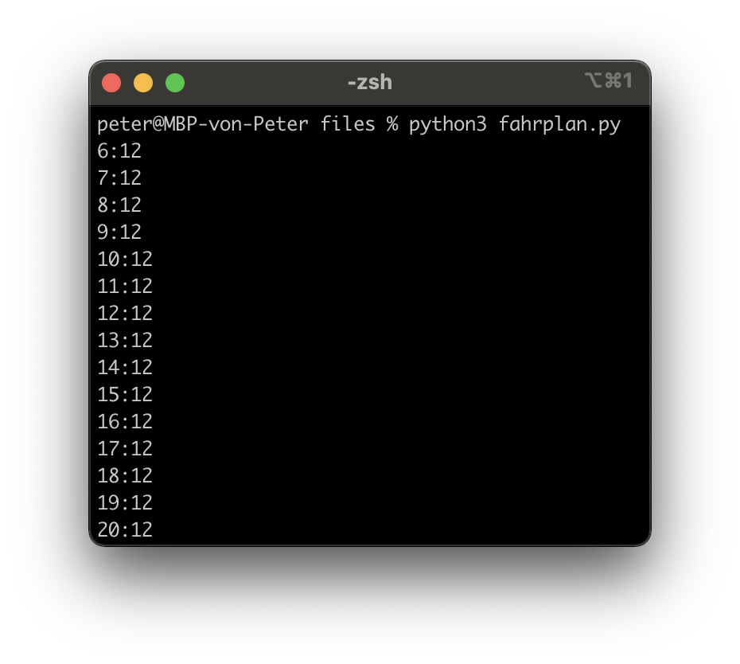

Sie verstehen das Prinzip von Loops (while, for) und können dieses Wissen in einem Programm umsetzen
Sie können ein Flussdiagramm aufgrund von Programmcode (oder vice verca) erstellen
Was sind Loops? (Schleifen)
Loops (Wiederholungen) kennen sie bereits aus ihrem Alltag, z. B. aus der Musik
In Python gibt es zwei Arten von Loops, While und For:
# (1) While-Loopi =0while i <5: # solange i < 5print("hallo", end=" ") # print ohne neue Zeile i = i +1# i um eins erhöhen# Output: hallo hallo hallo hallo hallo
# (2) For-Loopfor i inrange(0, 5): # für jedes i von 0 bis 5print("hallo", end=" ") # print ohne neue Zeile# Output: hallo hallo hallo hallo hallo
While-Loops in Python
While-Loops können alles, was For-Loops können und noch mehr. Trotzdem sollte man in den meisten Fällen For-Loops verwenden (weniger fehleranfällig).
i =5# Zähler-Variable definierenwhile i <10:print(i, end=" ") i = i +1# Zähler-Variable erhöhen# Output: 5 6 7 8 9
For-Loops sind “Syntactic Sugar” für While-Loops, wobei die Funktion “range(von, bis)” notwendig ist. Die Zähler-Variable (z. B. i) iteriert dabei durch den “range”.
for i inrange(5, 10):print(i, end=" ")# Output: 5 6 7 8 9
Mit dem “break”-Befehl kann der Loop verlassen werden (funktioniert auch bei While-Loops)
for i inrange(5, 10):if i ==8:break# Loop verlassenprint(i, end=" ")# Output: 5 6 7
Das Flussdiagramm als visuelle Darstellung
i =2while i <10:print(i) i = i +2print("fertig")# Output: 2 4 6 8 fertig
(Da For-Loops nur “Syntactic Sugar” für While-Loops sind, werden diese als While-Loop dargestellt.)
Auftrag: Stellen sie sich vor, sie seien wieder in der Primarschule
Die Lehrerin möchte, dass sie die Zahlen von 1 bis 1000 aufschreiben. Automatisieren sie diesen Auftrag.
Die Lehrerin verlangt nun, dass sie von 1000 wieder rückwärts auf 1 zählen. Erstellen sie ein Programm.
Nun möchte die Lehrerin auch noch, dass sie die 7er-Reihe bis 1000 (1x7, 2x7, 3x7…) aufschreiben. Erstellen sie wieder ein Programm.
Auftrag: Fahrplan Luzern - Engelberg
Der IR (Interregio) von Luzern nach Engelberg fährt nur 1x pro Stunde. Der erste Zug fährt um 6:12 und der letzte Zug um 20:12. Erstellen sie ein Programm, welches den Fahrplan ausgibt (ohne jeden Zug einzeln aufzuschreiben).

Auftrag: Prüfungssoftware Programmieren
Programmieren sie eine Software, welche eine Frage stellt (z. B. Was ist die Hauptstadt der Schweiz?) und nach 10 falschen Antworten “Prüfung leider nicht bestanden” ausgibt. Wenn die Frage richtig beantwortet wird, soll “Gratulation!” ausgegeben werden.
Tipp: Mit “ctrl-c” brechen sie die Ausführung des Programms ab